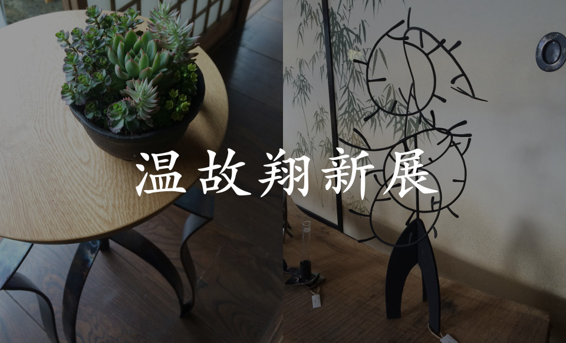
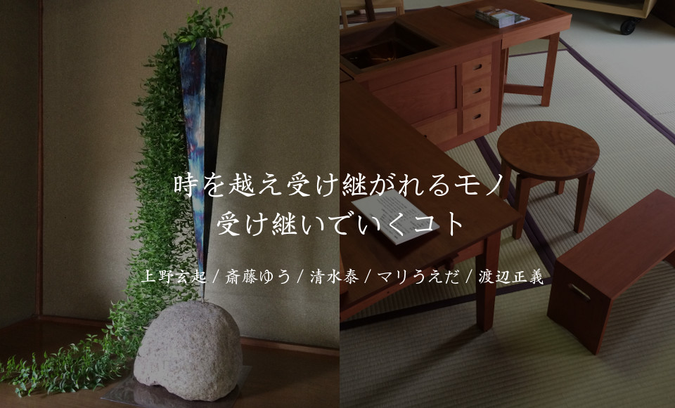

ゼロッソだからこそ ワクワクする抽斗のある家具
今の暮らしに合うお仏壇 ずっと座っていたい椅子
スタイリッシュなテーブル 点茶もできるユニット家具「峰雲」
桐箪笥など古い家具のリメイク 温もり溢れる小物やおもちゃ達

温故翔新展
時を越え受け継がれるモノ
受け継いでいくコト
上野玄起 / 斎藤ゆう / 清水泰 / マリうえだ / 渡辺正義
今回で5回目の開催となる「温故翔新展」に参加致します。
旧石川酒造の築約150年の座敷蔵を「ギャラリー登美」として期間限定でオープン。
ジャンルの異なる5人の作家による作品の展示販売、並びにワークショップなどを開催しますので、是非お越し下さい。
名称：温故翔新展
会期：2017年5月26日（金）〜 30日（火）11:00 - 17:00
場所：ギャラリー登美（期間限定ギャラリー）
〒400-0104 山梨県甲斐市龍地59
問合せ：090-6102-6656 清水泰まで

ゼロッソでは、アトリエに併設する「Gallery ZEROSSO」にて、作品をご覧頂くことができます。小さな空間ですが、静かに作品と対話することが可能です。
木と鉄と植物、3名のクリエイターによるライフスタイルブランドである「feeLife YATSUGATAKE」の作品もご覧頂けます。


〒408-0033 山梨県北杜市長坂町白井沢1022
TEL 0551-32-7784
清水携帯 090-6102-6656
メールアドレス yasushi@zerosso.net
営業時間は 9：00 ～ 17：00 です。
不定休ですので、ご来訪の際は事前にご連絡をお願い致します。
※地図をクリックすると googlemap で表示されます。

清水 泰
Yasushi Shimizu
1965年神奈川生まれ
早稲田大学教育学部卒業
東京水産大学修士課程修了
10年間勤めた製薬会社を退職
埼玉県立飯能高等技術専門校修了
2002年2月：山梨県で工房YASUSHI開設
2003年：第1回目の個展開催、以後毎年数回の個展・グループ展を開催
2005年：第23回朝日現代クラフト展入選
2007年：第25回朝日現代クラフト展入選
2009年：第48回日本クラフト展入選、高岡クラフトコンペ入選
2010年：第49回日本クラフト展入選、高岡クラフトコンペ入選